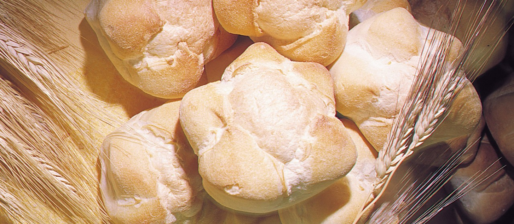

Michetta is a traditional Italian white bread characterized by its round and bulbous shape, hard crust, and an airy, slightly hollow texture of the interior. It is believed that michetta was invented in Lombardy during the period of the Austrian rule. The bread is best served fresh, and it is typically filled and enjoyed as a sandwich. It can be paired with anything from pesto and mozzarella to prosciutto.
Meal prep time : 1 hour 50 minutes
Servings : 20